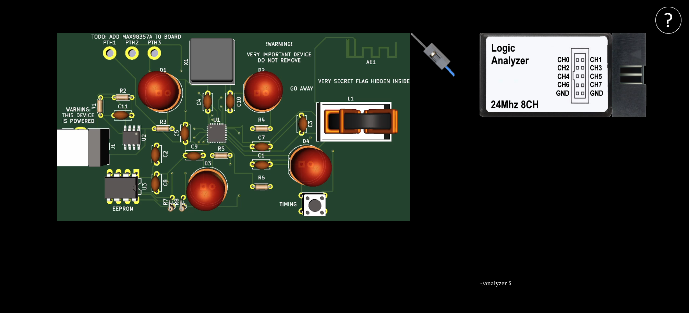
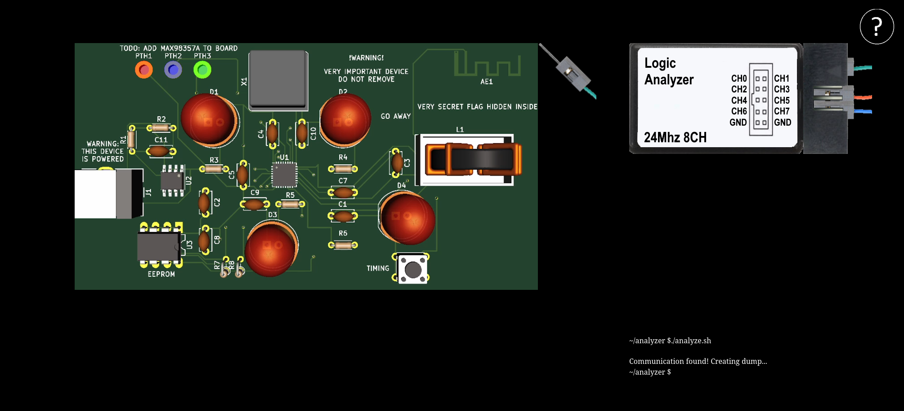
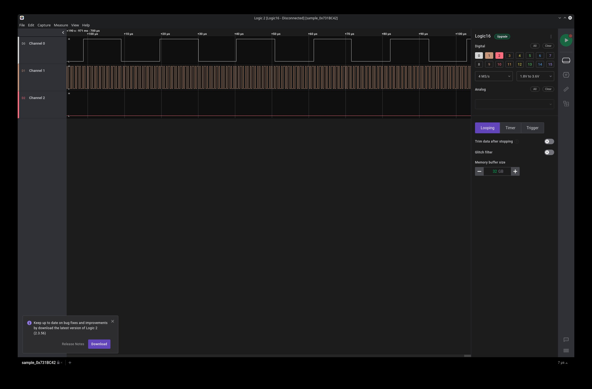
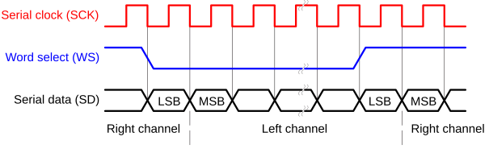

You can't hear me
"We've found this piece of hardware, it seems to be trying to tell us something."
Exploration
This challenge presents us with a website containing a video of a circuit board, a picture of a logic analyzer, and a 'terminal'.

After some clicking around we find that clicking the 'probe' cycles the colour,
the pads at the top left of the circuit board can then be clicked on. With the
below configuration we are able to run ./analyze.sh in the terminal, which
causes the file sample_0x731BC42.sal to be downloaded.

Analysis
This .sal file is a dump created by Salea Logic 2, opening it reveals a 190 second trace of three channels. The first two appear to be clocks, and the third appears to be data.

Looking at the circuit board we see TODO: ADD MAX98357A TO BOARD, searching
for this chip reveals it is a 3W i2s
amplifier
I2S is a three channel protocol with a clock, a channel select, and a PCM channel. Which checks out with the trace.

Extraction
Conveniently Salea also has an i2s decoder.
Annoyingly the Linux version crashes when decoding large traces...
Luckily the windows version does not appear to have these issues.
Unfortunately the Salea i2s decoder doesn't support exporting a wave file, instead it exports a CSV looking like the following:
Time [s],Channel,Value
145.572849249999990,2,0xF62F
145.572859749999992,1,0x103B
145.572869999999995,2,0xF642
145.572880499999997,1,0x0F20
145.572890999999998,2,0xF60B
145.572901250000001,1,0x0C1A
145.572911750000003,2,0xF58F
145.572922250000005,1,0x0919
145.572932500000007,2,0xF4A7
145.572943000000009,1,0x06E3
145.572953500000011,2,0xF381
145.572963750000014,1,0x0541
145.572974249999987,2,0xF2BA
145.572984749999989,1,0x0499
145.572994999999992,2,0xF332
145.573005499999994,1,0x0525
145.573015749999996,2,0xF511
145.573026249999998,1,0x05A0
145.573036750000000,2,0xF760
145.573047000000003,1,0x0504
145.573057500000004,2,0xF996
145.573068000000006,1,0x0424
145.573078250000009,2,0xFBF5
145.573088750000011,1,0x03C2
145.573099250000013,2,0xFE07
After some searching, I found the PCM2Wav-py library which was capable of converting this CSV exported by Salea, with a bit of modification I was able to get it to convert correctly!
from PCM2Wav import PCM2Wav
from PCM2Wav.PCM import PCM
class I2S(PCM.PCM):
TIME_LOC = 0
VALUE_LOC = -1
CHANNEL_LOC = -2
FIRST_D = 1
def __init__(self, csv_file, delimiter=','):
super(I2S, self).__init__(csv_file, self.FIRST_D)
self.delimiter = delimiter
self.start_time = float(self.extract_value(self.start_time,
self.TIME_LOC))
self.end_time = float(self.extract_value(self.end_time,
self.TIME_LOC))
def extract_value(self, line, key):
line = line.split(self.delimiter)
line = line[key].rstrip()
return line
def determine_sample_rate(self):
super(I2S, self).determine_sample_rate()
# 2 samples per period
self.sample_rate /= 2
super(I2S, self).reset()
return int(self.sample_rate)
def pop_data(self):
super(I2S, self).pop_data()
# Skip header
if self.sample_count <= self.FIRST_D:
return self.pop_data()
value = int(self.extract_value(self.line, self.VALUE_LOC), 16)
value = value.to_bytes(2, byteorder='big', signed=False)
value = int.from_bytes(value, byteorder='big', signed=True)
channel = int(self.extract_value(self.line, self.CHANNEL_LOC), 16)
if self.sample_count <= self.FIRST_D + 1:
if int(channel) != 1:
return self.pop_data()
return channel, value
def close(self):
self.sample_count -= self.FIRST_D
super(I2S, self).close()
PCM2Wav(I2S, "wav2.csv", "full.wav")
Running this gets us the following audio:
Head scratching
We are told that "The flag format is CTF{decimal numbers}", the song in the
clip appears to be the single version of 'one' by 'three dog night'.
After a while of trying different combinations of the numbers appearing in the lyrics, I realized that the video of the circuit board on the website has a blinking light, and has the exact same length as the song... With a quick ffmpeg command I merged these together to get the following video:
If you write down the numbers said in the lyrics at the same time as the led being on (with any non-number lyric mapping to zero) you get 1211001121111111, which is the flag.